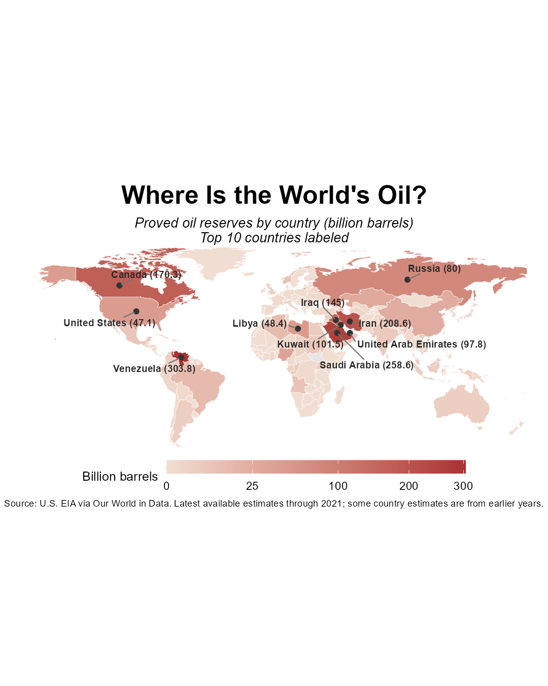
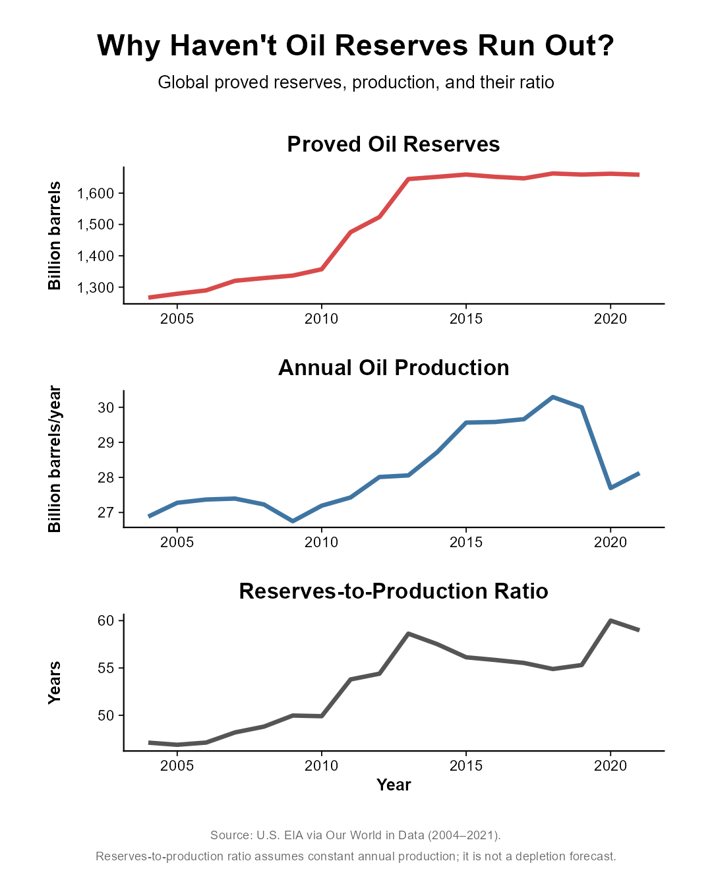
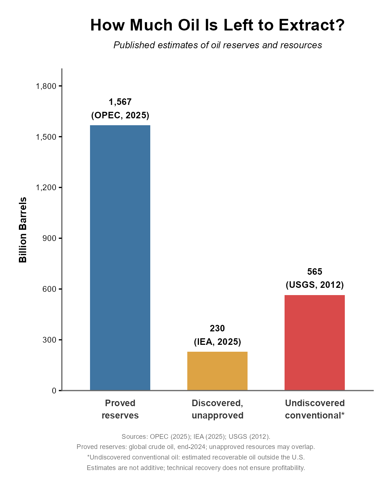
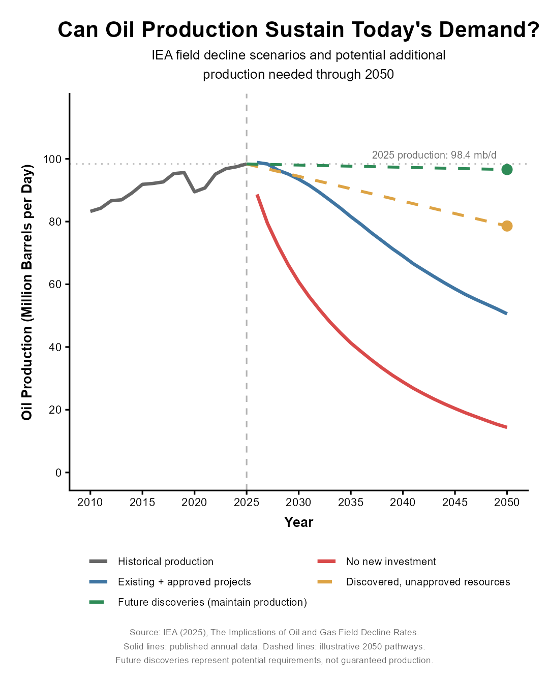
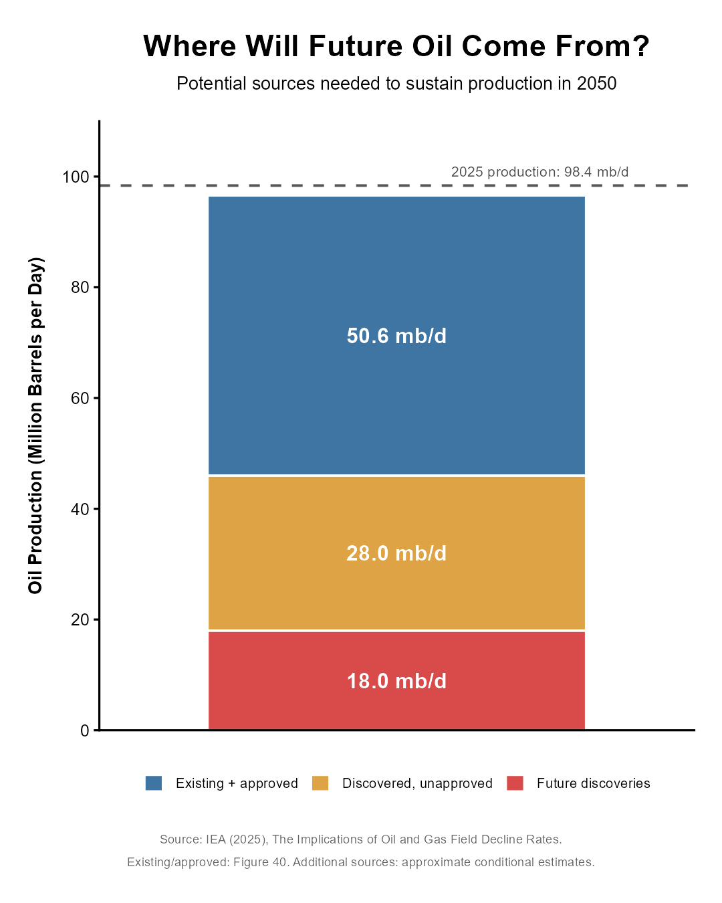
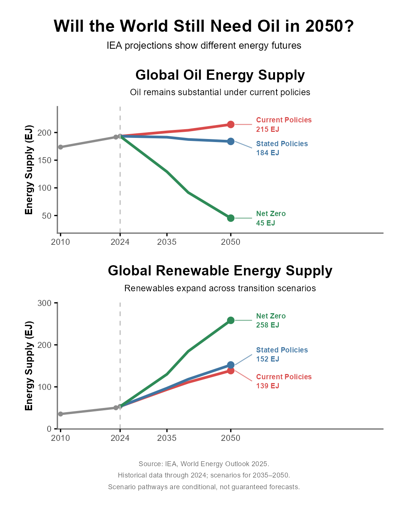

Oil, Time, and the Energy Transition

Project Overview
Modern society remains heavily dependent on oil for transportation, manufacturing, agriculture, and the production of countless everyday materials. Yet oil is a finite resource, raising important questions about how much remains, how long production can continue, and what the global energy system might look like in the coming decades.
This project examines global oil reserves, historical production, remaining resources, and potential future supply using publicly available data from the U.S. Energy Information Administration (EIA), OPEC, the U.S. Geological Survey (USGS), and the International Energy Agency (IEA).
Rather than attempting to predict exactly when the world will run out of oil, the analysis investigates how reserves and production have evolved, why existing oil fields decline, and how different energy scenarios could influence future oil demand.
Questions
The project was organized around several related questions:
- Where are the world's remaining proved oil reserves located?
- Why have global oil reserves not declined steadily despite continued extraction?
- How much oil remains in discovered and undiscovered resources?
- Can existing oil fields sustain current production through 2050?
- Where would additional oil production need to come from?
- How might global oil and renewable energy supply change under different energy scenarios?
Analytical Approach
Global oil reserve and production datasets were cleaned, integrated, and visualized using R. Historical proved reserves were compared with annual production to calculate the reserves-to-production ratio, a commonly used indicator of the relationship between reported reserves and current extraction rates.
Country-level reserves were mapped to examine their geographic distribution. Published estimates of proved reserves, discovered but unapproved resources, and undiscovered conventional oil were then compared to illustrate the different categories used to describe remaining petroleum resources.
Finally, IEA field-decline estimates and energy scenarios were used to examine potential oil production through 2050, the additional resources that could be needed to sustain production, and possible changes in the balance between oil and renewable energy.
Historical observations, published estimates, and future scenarios are distinguished throughout the analysis. Resource estimates are not necessarily additive, and future pathways should not be interpreted as guaranteed forecasts.
1. Where Is the World's Oil?
The first question was where the world's remaining proved oil reserves are located. Proved reserves represent quantities of oil estimated to be commercially recoverable from known reservoirs under specified technical and economic conditions.
The global distribution is highly uneven. Countries including Venezuela, Saudi Arabia, Iran, Canada, and Iraq contain some of the largest reported proved reserves.
Venezuela alone was reported to hold approximately 304 billion barrels, followed by Saudi Arabia with approximately 259 billion barrels in the country-level dataset used for this analysis.
However, large reported reserves do not necessarily translate into high production. Extraction costs, infrastructure, geology, investment, and political or economic conditions all influence how much oil can actually be produced.

2. Why Haven't Oil Reserves Run Out?
Oil is continuously extracted and consumed, so it might seem reasonable to expect reported reserves to decline every year. However, historical data show that global proved reserves have not followed this simple pattern.
Between 2004 and 2021, reported global proved reserves generally increased, even as annual oil production continued at approximately 27–30 billion barrels per year.
This happens because proved reserves are not a fixed measure of all oil remaining underground. New discoveries, technological improvements, changes in oil prices, and revisions to existing fields can change how much oil qualifies as commercially recoverable.
The reserves-to-production ratio increased from approximately 47 years to nearly 59 years during the analyzed period. However, this ratio assumes production remains constant and does not represent a forecast of when oil will run out.

3. How Much Oil Is Left to Extract?
Proved reserves are only one category of remaining oil. Additional petroleum resources may already have been discovered but not approved for development, while other resources remain undiscovered.
OPEC reported approximately 1,567 billion barrels of global proved crude oil reserves at the end of 2024.
The IEA identified approximately 230 billion barrels associated with discovered but unapproved resources, while a USGS assessment estimated approximately 565 billion barrels of technically recoverable undiscovered conventional oil outside the United States.
These estimates describe different resource categories, geographic scopes, and assessment periods. They should not simply be added together to calculate a single global oil total.
Importantly, technically recoverable oil is not necessarily economically profitable to extract.

4. Can Existing Oil Fields Sustain Today's Demand?
Even when substantial oil remains underground, maintaining production is not guaranteed. Oil fields naturally experience declining output as reservoir pressure decreases and recoverable oil becomes progressively more difficult to extract.
IEA field-decline estimates illustrate how global production could change under different levels of investment and development.
In a scenario without new investment, production from existing fields declines rapidly. Continued investment in existing fields and already approved projects can slow this decline, but the analyzed pathway still falls to approximately 50.6 million barrels per day by 2050.
For comparison, the analysis uses a reference production level of approximately 98.4 million barrels per day in 2025.
This creates a central challenge: sustaining high production requires continued investment, new development, or additional discoveries, even before accounting for potential changes in demand.

5. Where Would Future Oil Production Come From?
If the world attempts to maintain production near current levels through 2050, existing and approved projects alone may not provide sufficient output.
The illustrative production pathway combines approximately 50.6 million barrels per day from existing and approved projects, 28 million barrels per day from discovered but unapproved resources, and 18 million barrels per day from future discoveries.
Together, these components illustrate the scale of additional development potentially required to sustain oil production near present levels.
The additional contributions are conditional estimates, not guaranteed future production. Whether they materialize depends on discoveries, investment, development timelines, economics, and environmental and energy policies.
The need for additional production would also depend strongly on how global oil demand evolves.

6. Will the World Still Need Oil in 2050?
The final question is not simply how much oil remains, but how much the world will need in the future.
The IEA's World Energy Outlook 2025 presents several scenarios describing different potential energy pathways. These scenarios depend on assumptions about government policies, technology, investment, and energy demand.
Under the Current Policies Scenario, global oil energy supply reaches approximately 215 exajoules (EJ) in 2050, while renewable energy supply reaches approximately 139 EJ.
Under the Stated Policies Scenario, oil supply is approximately 184 EJ and renewables reach 152 EJ.
Under the Net Zero Emissions Scenario, oil supply falls much more substantially to approximately 45 EJ, while renewable energy supply increases to approximately 258 EJ.
These pathways demonstrate that future oil dependence is not determined solely by geological availability. Energy policy, technological development, and the pace of electrification and renewable deployment are also important.

Conclusion
The world's oil resources are substantial, but their availability does not guarantee continued production at current levels. Proved reserves change with economic conditions, technological developments, and new discoveries, while existing oil fields naturally decline over time.
The analysis highlights two related challenges. First, maintaining high oil production requires continued investment and development as existing fields decline. Second, the amount of additional oil that will actually be needed depends on future energy demand.
The IEA scenarios show that the future role of oil varies considerably depending on policy choices and the pace of the energy transition. Under current policies, oil remains a major component of the global energy system in 2050. Under a net-zero pathway, its role becomes substantially smaller.
Ultimately, the question is not only how much oil remains underground, but also how society chooses to meet its energy needs in the decades ahead.